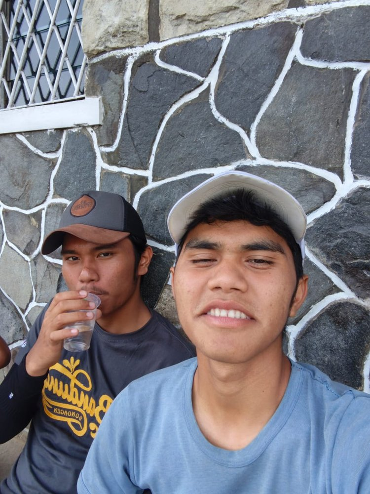
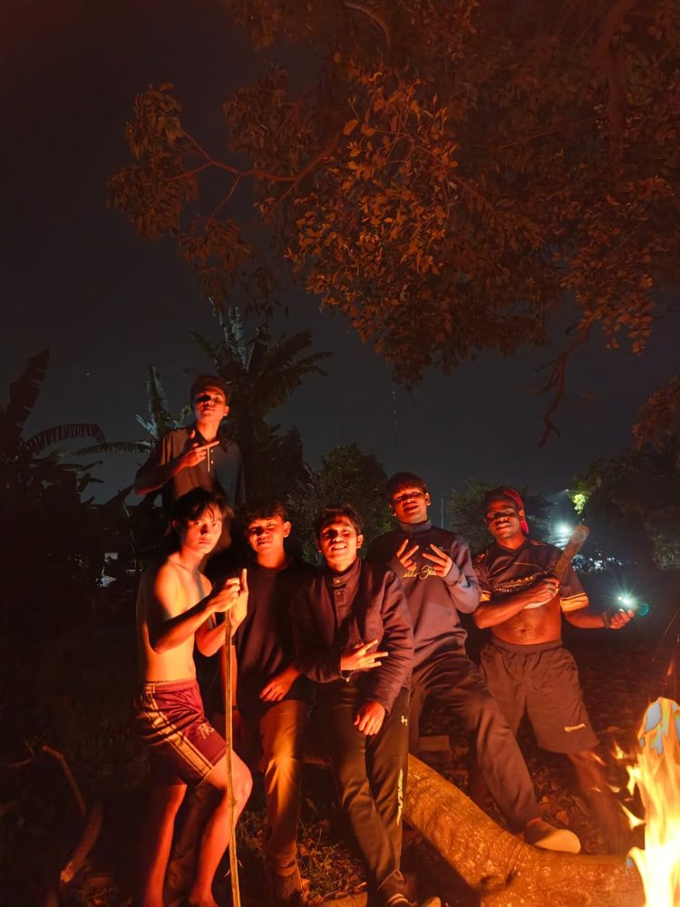
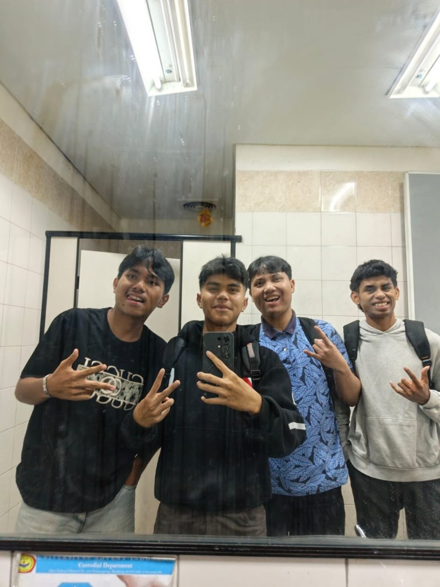

My Holiday
Liburan saya kali ini sedikit berbeda. Saya mengisinya dengan bekerja di asrama. Tidak ke tempat wisata, tetapi banyak hal yang saya pelajari.
Galeri



Cerita liburan
Mengapa bekerja di asrama?
Daripada hanya bersantai di rumah, saya memilih memakai waktu liburan untuk bekerja di asrama. Saya ingin punya pengalaman nyata, belajar bertanggung jawab, dan membantu kegiatan di sana.
Apa yang saya kerjakan?
Saya membantu pekerjaan sehari-hari di asrama dan menjaga lingkungan tetap bersih dan teratur. Pekerjaannya tidak selalu mudah, apalagi harus bangun pagi dan menyelesaikan tugas tepat waktu.
Apa yang saya pelajari?
Saya belajar disiplin, bekerja sama dengan orang lain, dan menghargai waktu. Di sela-sela pekerjaan saya tetap menyempatkan diri bermain badminton supaya badan tetap segar.
Kesan saya
Liburan ini memang tidak seperti liburan pada umumnya, tetapi justru sangat berkesan. Saya pulang dengan pengalaman baru, teman baru, dan semangat untuk kembali kuliah.